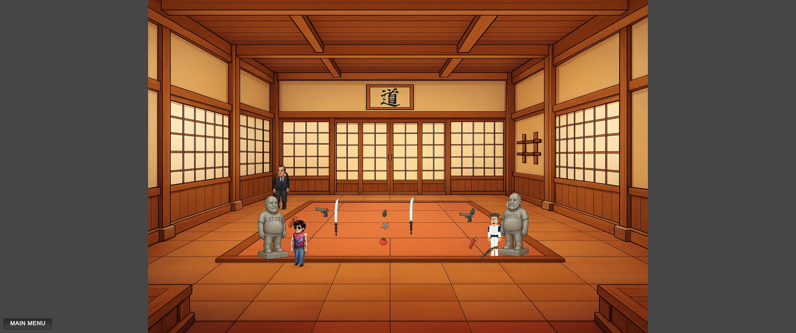
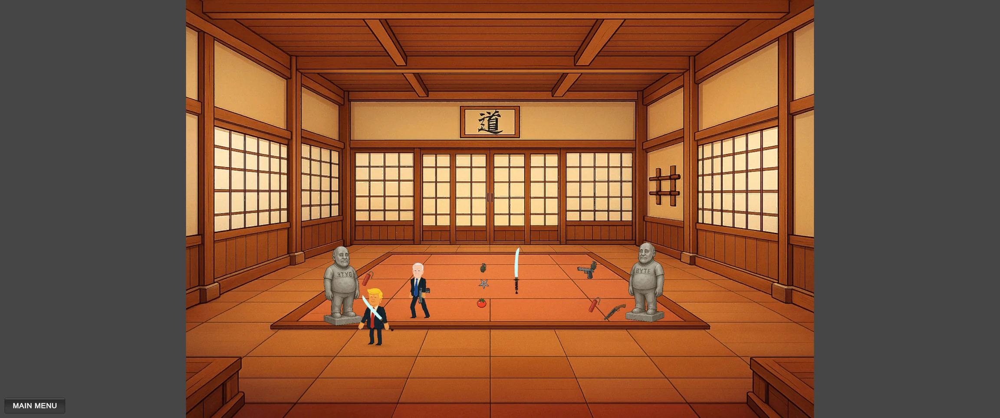
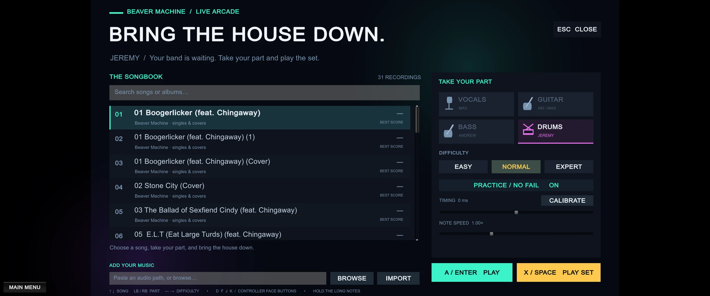
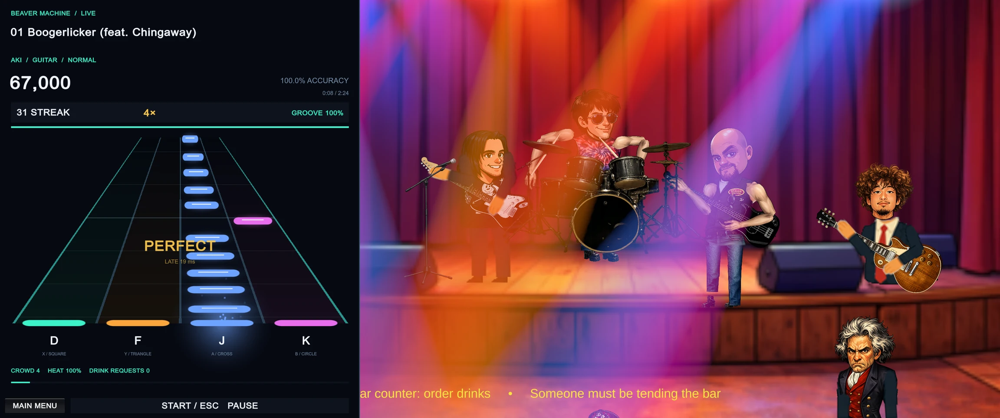
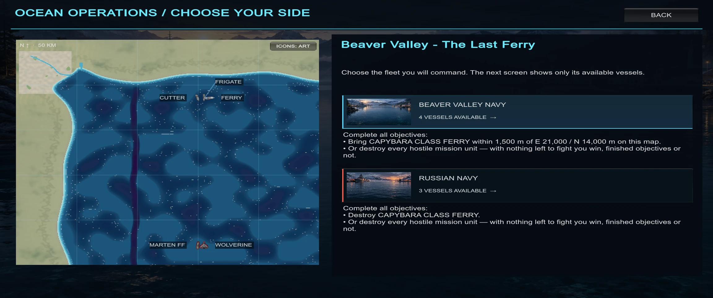

Find a doorway
Walk into range of a door or stairway and follow its prompt. Some transitions happen as you walk. A lift needs a working cab and a physical door may need to be open.

Get your bearings in Story Mode, learn the four rhythm lanes and find the right starting point for a trial, a match or an ocean mission.
Choose a living character, then enter the world. These are the default Player 1 keyboard bindings for walking around town.
Walk into range of a door or stairway and follow its prompt. Some transitions happen as you walk. A lift needs a working cab and a physical door may need to be open.
Open your inventory to check what your character owns. A home stash accepts deposits and withdrawals. Use a bed or sleeping bag to rest. In co-op the world speeds up when all living players are ready.
Approach a resident and address them to start a conversation. Eligible characters can be asked to join the party. A resident’s duties, injuries or custody can limit what they are able to do.

Move up or down the street until your character and the opponent share a line, then close the distance. A weapon passing in front of a sprite can miss its owner.
Use C or the left shoulder button as Player 1 to raise a guard. Meet the incoming weapon with your guard. A wooden item can absorb a metal strike and lose durability. A clash between metal weapons can interrupt both fighters, giving you time to move before the next swing.
A character can carry, drop or lose a held item. Unarmed moves and the twin-stick option change how fighting feels. Open Versus or enter the dojo if you want to learn outside the permanent Story death flow.
Rest can heal damage to surviving body parts. At the hospital you can also treat ailments and replace missing limbs. Your character may leave with a bill if they need medical care they cannot pay for upfront.

A person who calls out from across the street and a companion waiting for an order are different conversation partners. Check who is being addressed before you speak.
Hold Start and face someone to address the nearest person. While holding Start, press D-pad Up to talk to your party, Left to give everyone an order or Right to direct an order to the companion you face. D-pad Down broadcasts to nearby characters outside naval interiors. Zombie Chefs remain silent and the graveyard performance gives Tyrone his own introduction.
Ordinary doorway prompts stay available in a fight, including a fight with police. An officer or other pursuer can still follow. Custody, boarding a vehicle or a closed physical door can prevent travel independently.
Officers can respond to witnessed or reported incidents, request backup and take a suspect to booking. If a case goes to court, the testimony, evidence and assigned courtroom roles become part of the trial.
Buying goods, trading, paying for treatment and gambling all affect your finances. Check the demand if collectors appear. Repossession can take possessions from your inventory.

Open Beaver Machine Live from the main menu or use the rhythm desk at Beaver Machine’s Bar. Choose a song, a part and a difficulty, then start with a single song or play a full set.
From left to right use D, F, J and K on the keyboard. On a gamepad the lane order is west, north, south, east. Press as the note reaches the hit line and keep holding a long note to its end.
Guitar, bass, drums and vocals have their own charts. Vocals also uses the four lane buttons. Easy, Normal and Expert change the chart. Try calibration if your presses consistently register early or late.
Good timing earns points and consecutive hits build a multiplier. After the song, check your accuracy and best combo. Choose No Fail for practice, or import a supported audio file to play a chart built from your own music.


The chart, the ship’s condition and the mission briefing answer three different questions about the same encounter.
Your side shares its sensor tracks. A contact can appear under a track label before anyone identifies it. A lost track can prevent a new attack order.
A ship with hull integrity left can lose speed, sensor coverage or a weapon mount. Check the damaged system, ammunition and compartment flooding before ordering the ship back into action.
Each side has its own briefing. In The Last Ferry, Beaver Valley can win as soon as the Capybara reaches its rally area alive. A captain pursuing another ship can miss that crossing.

Some activities open directly from the main menu. Others belong to a venue inside Story Mode.
Choose Murder Mystery for the Bellweather House case. Approach the body, a guest or an object and press E or the controller’s east face button to investigate. Open the notebook with Tab or Select to compare witness accounts with injuries and the weapon you find.
Start an exhibition from the main menu. Read the directions and abilities on a card before placing it. A neighbouring card or a location effect may change the result of a clash.
Visit Grand FOB intelligence for the map and assignments. Before deploying, use the communications board to choose the mission’s free support package. Between missions, use the duty bunk to sleep until morning. Its panel shows how many off-duty days remain and how much health you can recover.
Poker offers Texas Hold’em. The casino also has blackjack, roulette and slots. For a cabinet game, visit James’s Barcade, walk up to a machine and have the entry price in your wallet.
Set up the cast and the case if you want to try a trial independently of a Story arrest. On the witness stand, listen for whose turn it is to give evidence.


Check foot position and weapon reach. Characters can overlap visually while standing at different depths. Try moving up or down the street to line up.
A permanent Story death opens replacement selection for your slot. Pick a surviving identity to continue. Arena and dojo knockouts follow separate rules.
Check the door prompt, the state of the physical door and whether your character is restrained, boarded or in a transition. A fight by itself leaves player travel available.
Use the home stash to deposit or withdraw items. It keeps its own contents across travel and save/load. The wardrobe and the bank have different inventories.
The command checks the selected unit, its available sensor track, the target, its fitted equipment and the ammunition left. Read the refusal in Fleet Command to see which condition is missing.
Hull integrity and equipment condition are tracked separately. A hit to engineering can cap the ship’s speed. Check compartment damage as well. Open connecting doors can let flooding spread.
Browse town venues, game modes and story events.
See What’s Built →